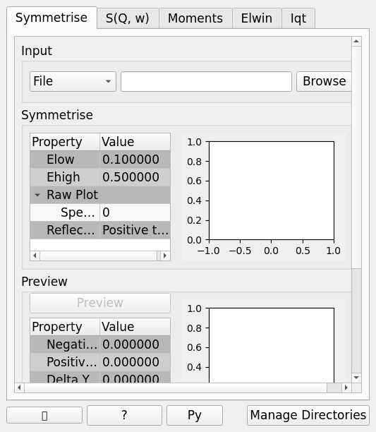
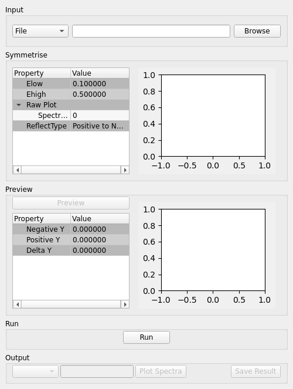
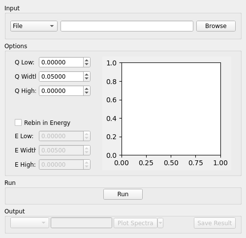
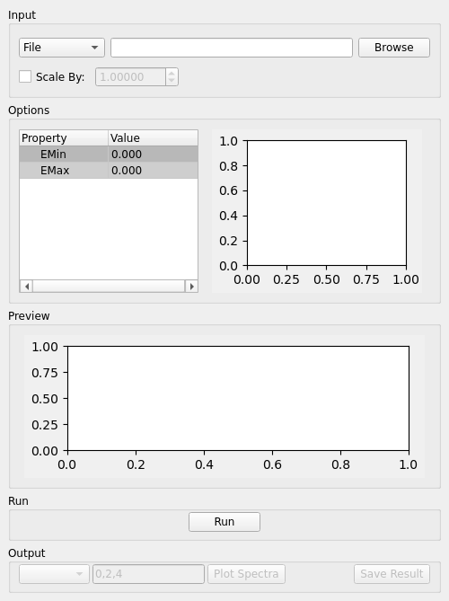
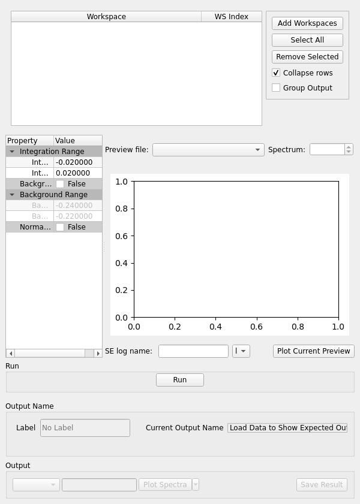
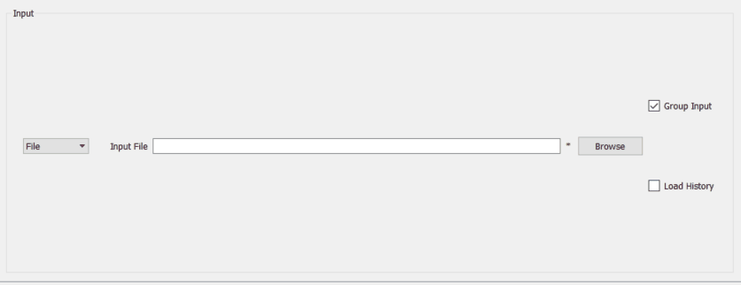
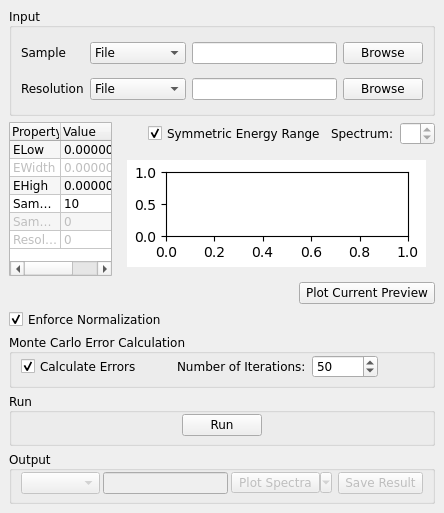

Inelastic Data Processor#
Overview#
The Inelastic Data Processor interface provides processes for transforming reduced data from, for example, Indirect Data Reduction and Direct Reduction routines or S(Q, w). The output data can then be used for analysis by processes in, for example, the Inelastic QENS Fitting and Inelastic Bayes Fitting interfaces.
{kind=link}

Symmetrise#
This tab allows you to take an asymmetric reduced file (_red.nxs) and symmetrise it about the Y axis.
The center of energy in the Y axis (E=0) is indicated by a solid red line. Two green vertical dashed lines can be moved to change the value of \(E_{low}\) and \(E_{high}\), which is the range of energies used to symmetrise the spectra. Additionally, two horizontal blue dotted lines can be moved to help in selecting a range that prevents rigged curves when the spectra is symmetrised.
The curve can be symmetrised using either side of the spectra by changing the Reflect Type property. This choice influences the direction onto which the spectra is symmetrised. Note that \(E_{low}\) represents the lowest value on the range, so when the spectra is on the positive side, \(E_{low}\) will be closer to the centre while in the negative side \(E_{low}\) will be farther from the centre. The following methods are available on the Reflect Type property:
Positive to Negative (default): the range of the positive values between \(E_{low}\) and \(E_{high}\) is reflected about the Y axis and replaces the corresponding values in the negative side of the spectra. The curve which ranges between \(\pm|E_{low}|\) is not modified.
Negative to Positive: the range of the negative values between \(-E_{low}\) and \(-E_{high}\) is reflected about the Y axis and replaces the corresponding values in the positive side of the spectra. The curve which ranges between \(\pm|E_{high}|\) is not modified.
{kind=link}

Symmetrise Options#
- Input
Allows you to select a reduced NeXus file (_red.nxs) or workspace (_red) as the input to the algorithm.
- ELow & EHigh
Sets the energy range that is to be reflected about \(y=0\).
- Reflect Type
Whether to do Positive to Negative or Negative to Positive reflection.
- Spectrum No
Changes the spectrum shown in the preview plots.
- XRange
Changes the range of the preview plot, this can be useful for inspecting the curve before running the algorithm.
- Preview
This button will update the preview plot and parameters under the Preview section.
- Run
Runs the processing configured on the current tab.
- Plot Spectra
If enabled, it will plot the selected workspace indices in the selected output workspace.
- Save Result
If enabled the result will be saved as a NeXus file in the default save directory.
Preview#
The preview section shows what a given spectra in the input will look like after it has been symmetrised and gives an idea of how well the value of \(E_{low}\) fits the curve on both sides of the peak.
- Negative Y
The value of \(y\) at \(x=-|E_{low}|\) on Positive to Negative or at \(x=-|E_{high}|\) on Negative to Positive.
- Positive Y
The value of \(y\) at \(x=|E_{low}|\) on Positive to Negative or at \(x=|E_{high}|\) on Negative to Positive.
- Delta Y
The difference between Negative and Positive Y. Typically this should be as close to zero as possible.
Symmetrise Example Workflow#
The Symmetrise tab operates on _red files. The file used in this workflow can
be produced using the 26176 run number on the ISIS Energy Transfer tab. The instrument used to
produce this file is IRIS, the analyser is graphite and the reflection is 002. See the
ISIS Energy Transfer Example Workflow.
In the Input box, load the file named
iris26176_graphite002_red. This will automatically plot the data on the first mini-plot.Move the green slider located at x = 0.5 to be at x = 0.4.
Click Preview. This will update the Preview properties and the neighbouring mini-plot.
Click Run and wait for the interface to finish processing. This will run the Symmetrise algorithm. The output workspace is called
iris26176_graphite002_sym_pn_red.Click Plot Spectra to produce a spectra plot of the output workspace. Other indices can be plotted by entering indices in the box next to the Plot Spectra button. For example, entering indices 0-2,4,6-7 will plot the spectra with workspace indices 0, 1, 2, 4, 6 and 7.
Go to the S(Q, w) Example Workflow.
S(Q, w)#
Provides an interface for running the SofQW algorithm SofQWNormalisedPolygon.
{kind=link}

S(Q, w) Options#
- Input
Allows you to select a reduced NeXus file (_red.nxs) or workspace (_red) as the input to the algorithm. An automatic contour plot of _rqw will be plotted in the preview plot once a file has finished loading.
- Q Low, Q Width & Q High
Q binning parameters that are passed to the SofQW3 algorithm. The low and high values can be determined using the neighbouring contour plot. The default values given show the Q range where there is data in the reduced workspace and these values cannot be changed.
- Rebin in Energy
If enabled the data will first be rebinned in energy before being passed to the SofQW algorithm.
- E Low, E Width & E High
The energy rebinning parameters. The low and high values can be determined using the neighbouring contour plot.
- Run
Runs the processing configured on the current tab.
- Plot Spectra
If enabled, it will plot the selected workspace indices in the selected output workspace.
- Open Slice Viewer
If enabled, it will open the slice viewer for the selected output workspace.
- Save Result
If enabled the result will be saved as a NeXus file in the default save directory.
S(Q, w) Example Workflow#
The S(Q, w) tab operates on _red files. The file used in this workflow can be produced
using the 26176 run number on the ISIS Energy Transfer tab. The instrument used to
produce this file is IRIS, the analyser is graphite and the reflection is 002. See the
ISIS Energy Transfer Example Workflow.
In the Input box, load the file named
iris26176_graphite002_red. This will automatically plot the data as a contour plot within the interface.Set the Q Low, Q Width and Q High to be 0.5, 0.05 and 1.8. These values are read from the contour plot.
Tick Rebin in Energy.
Set the E Low, E Width and E High to be -0.5, 0.005 and 0.5. Again, these values should be read from the contour plot.
Click Run and wait for the interface to finish processing. This will perform an energy rebin before performing the SofQW algorithm. The output workspace ends with suffix _sqw and is called
iris26176_graphite002_sqw.Enter a list of workspace indices in the output options (e.g. 0-2,4,6-7) and then click Plot Spectra to plot spectra from the output workspace.
Click the down arrow on the Plot Spectra button, and select Open Slice Viewer. This will open a slice viewer window for the output workspace.
Choose a default save directory and then click Save Result to save the output workspace. The _sqw file is used in the Moments Example Workflow.
Moments#
This interface uses the SofQWMoments algorithm to calculate the \(n^{th}\) moment of an \(S(Q, \omega)\) workspace created by the SofQW tab.
{kind=link}

Moments Options#
- Input
Allows you to select an \(S(Q, \omega)\) file (_sqw.nxs) or workspace (_sqw) as the input to the algorithm.
- Scale By
Used to set an optional scale factor by which to scale the output of the algorithm.
- EMin & EMax
Used to set the energy range of the sample that the algorithm will use for processing.
- Run
Runs the processing configured on the current tab.
- Plot Spectra
If enabled, it will plot the selected workspace indices in the selected output workspace.
- Save Result
If enabled the result will be saved as a NeXus file in the default save directory.
Moments Example Workflow#
The Moments tab operates on _sqw files. The file used in this workflow is produced during
the S(Q, w) Example Workflow.
In the Input box, load the file named
irs26176_graphite002_sqw. This will automatically plot the data in the first mini-plot.Drag the blue sliders on the mini-plot so they are x=-0.4 and x=0.4.
Click Run and wait for the interface to finish processing. This will run the SofQWMoments algorithm. The output workspace ends with suffix _moments and is called
iris26176_graphite002_moments.
Elwin#
Provides an interface for the ElasticWindow algorithm, with the option of selecting the range to integrate over as well as the background range. An on-screen plot is also provided.
For workspaces that have a sample log, or have a sample log file available in the Mantid data search paths that contains the sample environment information the ELF workspace can also be normalised to the lowest temperature run in the range of input files.
{kind=link}

Elwin Options#
- File or Workspace
Choose to load data from a file or a workspace by using this dropdown menu. See image below for demonstration of how to load files using either option.
{kind=link}

- Input File
Specify a range of input files that are either reduced (_red.nxs) or \(S(Q, \omega)\).
- Group Input
The ElasticWindowMultiple algorithm is performed on the input files and returns a group workspace as the output. This option, if unchecked, will ungroup these output workspaces.
- Load History
If unchecked the input workspace will be loaded without it’s history.
- Integration Range
The energy range over which to integrate the values.
- Background Subtraction
If checked a background will be calculated and subtracted from the raw data.
- Background Range
The energy range over which a background is calculated which is subtracted from the raw data.
- Normalise to Lowest Temp
If checked the raw files will be normalised to the run with the lowest temperature, to do this there must be a valid sample environment entry in the sample logs for each of the input files.
- SE log name
The name of the sample environment log entry in the input files sample logs (defaults to ‘sample’).
- SE log value
The value to be taken from the “SE log name” data series (defaults to the specified value in the instrument parameters file, and in the absence of such specification, defaults to “last value”)
- Preview File
The workspace currently active in the preview plot.
- Spectrum
Changes the spectrum displayed in the preview plot.
- Plot Current Preview
Plots the currently selected preview plot in a separate external window
- Run
Runs the processing configured on the current tab.
- Plot Spectra
If enabled, it will plot the selected workspace indices in the selected output workspace.
- Save Result
Saves the result in the default save directory.
Elwin Example Workflow#
The Elwin tab operates on _red and _sqw files. The files used in this workflow can
be produced using the run numbers 104371-104375 on the
Indirect Data Reduction interface in the ISIS Energy
Transfer tab. The instrument used to produce these files is OSIRIS, the analyser is graphite
and the reflection is 002.
Untick the Load History checkbox next to the file selector if you want to load your data without history.
Click Browse and select the files
osiris104371_graphite002_red,osiris104372_graphite002_red,osiris104373_graphite002_red,osiris104374_graphite002_redandosiris104375_graphite002_red. Load these files and they will be plotted in the mini-plot automatically.The workspace and spectrum displayed in the mini-plot can be changed using the combobox and spinbox seen directly above the mini-plot.
You may opt to change the x range of the mini-plot by changing the Integration Range, or by sliding the blue lines seen on the mini-plot using the cursor. For the purpose of this demonstration, use the default x range.
Tick Normalise to Lowest Temp. This option will produce an extra workspace with end suffix _elt. However, for this to work the input workspaces must have a temperature. See the description above for more information.
Click Plot Current Preview if you want a larger plot of the mini-plot.
Click Run and wait for the interface to finish processing. This should generate four workspaces ending in _eq, _eq2, _elf and _elt.
In the Output section, select the workspace ending with _eq and then choose some workspace indices (e.g. 0-2,4). Click Plot Spectra to plot the spectrum from the selected workspace.
Choose a default save directory and then click Save Result to save the output workspaces. The workspace ending in _eq will be used in the MSD Example Workflow.
I(Q, t)#
Given sample and resolution inputs, carries out a fit as per the theory detailed in the TransformToIqt algorithm.
{kind=link}

I(Q, t) Options#
- Sample
Either a reduced file (_red.nxs) or workspace (_red) or an \(S(Q, \omega)\) file (_sqw.nxs) or workspace (_sqw).
- Resolution
Either a resolution file (_res.nxs) or workspace (_res) or an \(S(Q, \omega)\) file (_sqw.nxs) or workspace (_sqw).
- ELow, EHigh
The rebinning range.
- Enforce Normalization
The LHSWorkspace from the output from ExtractFFTSpectrum v1 is used in both branches to perform the final workspace division and the two intermediate workspace divisions are skipped by unchecking this option.
- SampleBinning
The number of neighbouring bins are summed.
- Symmetric Energy Range
Untick to allow an asymmetric energy range.
- Spectrum
Changes the spectrum displayed in the preview plot.
- Plot Current Preview
Plots the currently selected preview plot in a separate external window
- Calculate Errors
The calculation of errors using a Monte Carlo implementation can be skipped by unchecking this option.
- Number Of Iterations
The number of iterations to perform in the Monte Carlo routine for error calculation in I(Q,t).
- Run
Runs the processing configured on the current tab.
- Plot Spectra
If enabled, it will plot the selected workspace indices in the selected output workspace.
- Plot Tiled
Generates a tiled plot containing the selected workspace indices. This option is accessed via the down arrow on the Plot Spectra button.
- Save Result
Saves the result workspace in the default save directory.
I(Q, t) Example Workflow#
The I(Q, t) tab allows _red and _sqw for it’s sample file, and allows _red, _sqw and
_res for the resolution file. The sample file used in this workflow can be produced using the run
number 26176 on the Indirect Data Reduction interface in the ISIS
Energy Transfer tab. The resolution file is created in the ISIS Calibration tab using the run number
26173. The instrument used to produce these files is IRIS, the analyser is graphite
and the reflection is 002.
Click Browse for the sample and select the file
iris26176_graphite002_red. Then click Browse for the resolution and select the fileiris26173_graphite002_res.Change the SampleBinning variable to be 5. Changing this will calculate values for the EWidth, SampleBins and ResolutionBins variables automatically by using the TransformToIqt algorithm where the BinReductionFactor is given by the SampleBinning value. The SampleBinning value must be low enough for the ResolutionBins to be at least 5. A description of this option can be found in the A note on Binning section.
Untick Calculate Errors if you do not want to calculate the errors for the output workspace which ends with the suffix _iqt.
Click Run and wait for the interface to finish processing. This should generate a workspace ending with a suffix _iqt.
In the Output section, select some workspace indices (e.g.0-2,4,6) for a tiled plot and then click the down arrow on the Plot Spectra button before clicking Plot Tiled.
Choose a default save directory and then click Save Result to save the _iqt workspace. This workspace will be used in the I(Q, t) Example Workflow.
A note on Binning#
The bin width is determined from the energy range and the sample binning factor. The number of bins is automatically calculated based on the SampleBinning specified. The width is determined from the width of the range divided by the number of bins.
The following binning parameters cannot be modified by the user and are instead automatically calculated through the TransformToIqt algorithm once a valid resolution file has been loaded. The calculated binning parameters are displayed alongside the binning options:
- EWidth
The calculated bin width.
- SampleBins
The number of bins in the sample after rebinning.
- ResolutionBins
The number of bins in the resolution after rebinning. Typically this should be at least 5 and a warning will be shown if it is less.
Categories: Interfaces | Inelastic